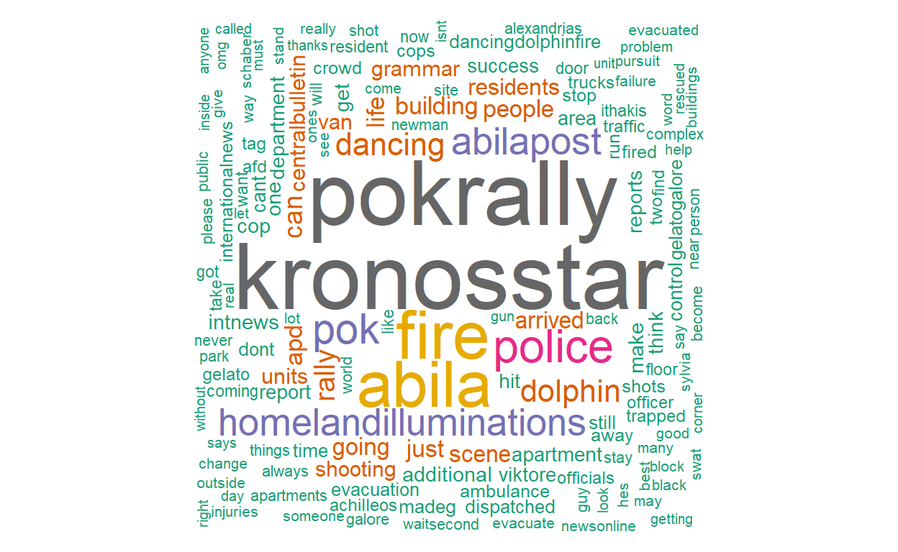
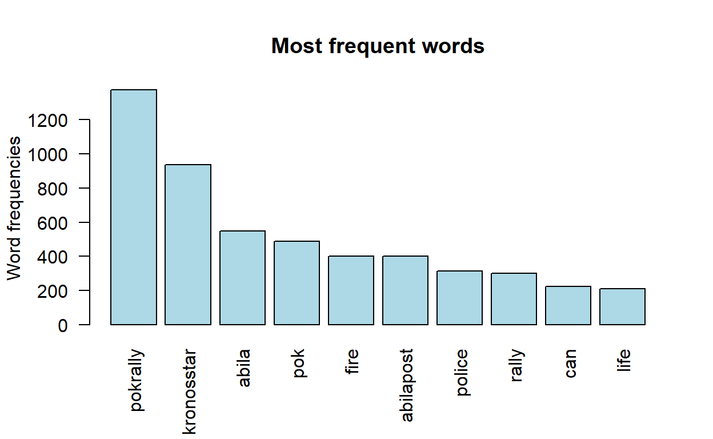
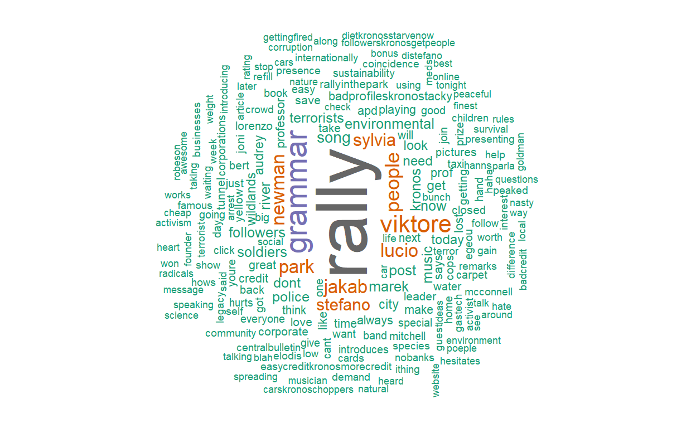
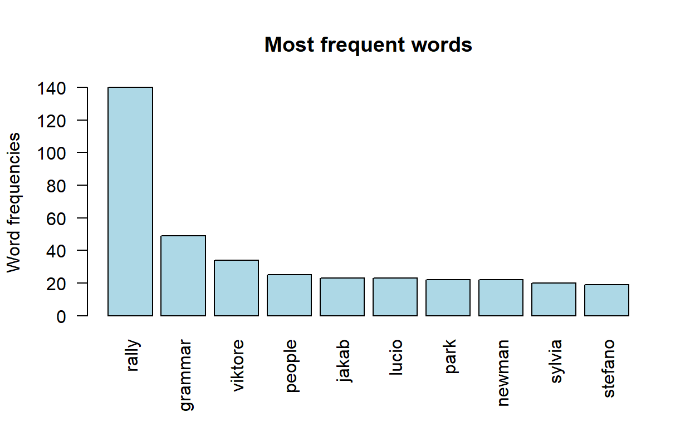
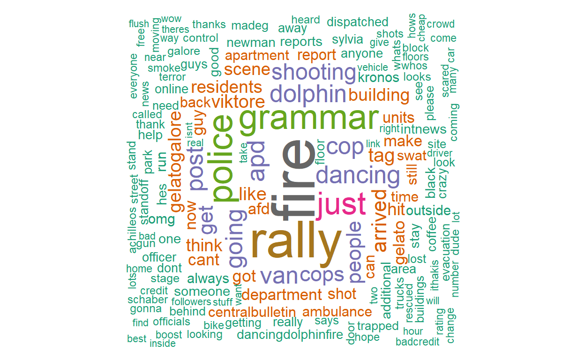
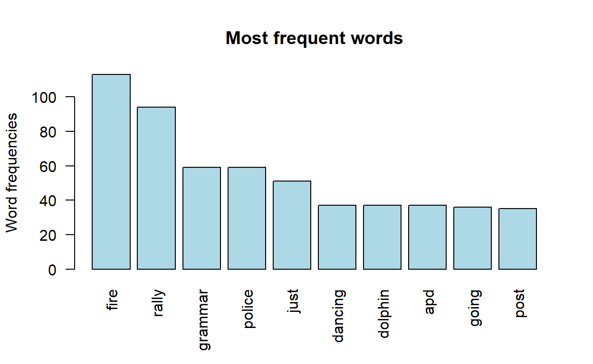
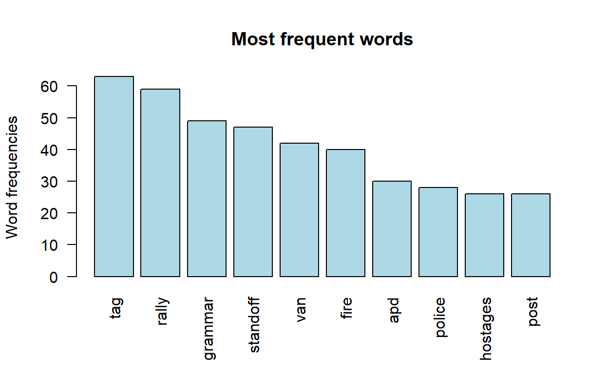

VAST Mini Challenge 3
Vast Challenge: Mini-Challenge 3 poses a social media and text analysis challenge.
We are to perform a retrospective analysis based on limited information about what took place in order to identify risks and how they could have been mitigated more effectively.
The single data stream available comes from two major sources:
Microblog records that have been identified by automated filters as being potentially relevant to the ongoing incident
Text transcripts of emergency dispatches by the Abila, Kronos local police and fire departments.
Using visual analytics, characterize the different types of content in the dataset. What distinguishes meaningful event reports from typical chatter from junk or spam?
Use visual analytics to represent and evaluate how the level of the risk to the public evolves over the course of the evening. Consider the potential consequences of the situation and the number of people who could be affected.
If you were able to send a team of first responders to any single place, where would it be? Provide your rationale. How might your response be different if you had to respond to the events in real time rather than retrospectively?
This is so that the code can run.
packages = c('tm', 'SnowballC', 'wordcloud', 'RColorBrewer', 'dplyr',
'Rcpp', 'lubridate', 'stringr', 'tidytext', 'igraph',
'ggraph', 'ggplot2', 'rtweet', 'raster', 'sf',
'tmap', 'tidyr', 'tidyverse','tibble')
for (p in packages){
if(!require(p, character.only = T)){
install.packages(p)
}
library(p, character.only = T)
}
2.2.1 Set seed for reproducibility
set.seed(1234)
2.2.2 Import csv files
2.2.3 Change datetime
df1$dt = df1$dt - 20140123000000
df2$dt = df2$dt - 20140123000000
df3$dt = df3$dt - 20140123000000
df1$dt <- format(strptime(df1$dt, format="%H%M%S"), format = "%H:%M:%S")
df2$dt <- format(strptime(df2$dt, format="%H%M%S"), format = "%H:%M:%S")
df3$dt <- format(strptime(df3$dt, format="%H%M%S"), format = "%H:%M:%S")
2.2.4 Find out range of dates per dataframe
df1 is from 17:00:00 to 18:34:00
df2 is from 18:31:00 to 20:04:00
df3 is from 20:01:00 to 21:34:45
It looks like there is some overlap in time in df1, df2, df3.
2.2.5 Create new dataframes
# Bind df1, df2 and df3 together to create df4
df4 <- rbind(df1, df2, df3)
# df1: Extract 17:00 to <18:30
df1 <- df4[df4$dt < "18:30:00",]
df1$period <- "17:00 to <18:30"
# df2: Extract 18:30 to <20:00
df2 <- df4[df4$dt >= "18:30:00" & df4$dt < "20:00:00",]
df2$period <- "18:30 to <20:00"
# df3: Extract >=20:00
df3 <- df4[df4$dt >= "20:00:00",]
df3$period <- ">=20:00"
2.2.6 Find out range of dates per new dataframe
new df1 is from 17:00:00 to 18:29:44
new df2 is from 18:30:00 to 19:59:52
new df3 is from 20:00:13 to 21:34:45
new df4 is from 17:00:00 to 21:34:45
There are no overlaps now!
2.2.7 Investigating if there is any spam
We use wordclouds to see the most frequent words.
Wordcloud for df1
text <- df1$message
docs <- Corpus(VectorSource(text))
docs <- docs %>%
tm_map(removeNumbers) %>%
tm_map(removePunctuation) %>%
tm_map(stripWhitespace)
docs <- tm_map(docs, content_transformer(tolower))
docs <- tm_map(docs, removeWords, stopwords("english"))
dtm <- TermDocumentMatrix(docs)
matrix <- as.matrix(dtm)
words <- sort(rowSums(matrix),decreasing=TRUE)
wc1 <- data.frame(word = names(words),freq=words)
wordcloud(words = wc1$word, freq = wc1$freq, min.freq = 1,
max.words=175, random.order=FALSE, rot.per=0.35,
colors=brewer.pal(8, "Dark2"))
Wordcloud for df2
text <- df2$message
docs <- Corpus(VectorSource(text))
docs <- docs %>%
tm_map(removeNumbers) %>%
tm_map(removePunctuation) %>%
tm_map(stripWhitespace)
docs <- tm_map(docs, content_transformer(tolower))
docs <- tm_map(docs, removeWords, stopwords("english"))
dtm <- TermDocumentMatrix(docs)
matrix <- as.matrix(dtm)
words <- sort(rowSums(matrix),decreasing=TRUE)
wc2 <- data.frame(word = names(words),freq=words)
wordcloud(words = wc2$word, freq = wc2$freq, min.freq = 1,
max.words=175, random.order=FALSE, rot.per=0.35,
colors=brewer.pal(8, "Dark2"))

Wordcloud for df3
text <- df3$message
docs <- Corpus(VectorSource(text))
docs <- docs %>%
tm_map(removeNumbers) %>%
tm_map(removePunctuation) %>%
tm_map(stripWhitespace)
docs <- tm_map(docs, content_transformer(tolower))
docs <- tm_map(docs, removeWords, stopwords("english"))
dtm <- TermDocumentMatrix(docs)
matrix <- as.matrix(dtm)
words <- sort(rowSums(matrix),decreasing=TRUE)
wc3 <- data.frame(word = names(words),freq=words)
wordcloud(words = wc3$word, freq = wc3$freq, min.freq = 1,
max.words=175, random.order=FALSE, rot.per=0.35,
colors=brewer.pal(8, "Dark2"))
Wordcloud for df4
text <- df4$message
docs <- Corpus(VectorSource(text))
docs <- docs %>%
tm_map(removeNumbers) %>%
tm_map(removePunctuation) %>%
tm_map(stripWhitespace)
docs <- tm_map(docs, content_transformer(tolower))
docs <- tm_map(docs, removeWords, stopwords("english"))
dtm <- TermDocumentMatrix(docs)
matrix <- as.matrix(dtm)
words <- sort(rowSums(matrix),decreasing=TRUE)
wc4 <- data.frame(word = names(words),freq=words)
wordcloud(words = wc4$word, freq = wc4$freq, min.freq = 1,
max.words=175, random.order=FALSE, rot.per=0.35,
colors=brewer.pal(8, "Dark2"))
Barplot for df4
barplot(wc4[1:10,]$freq, las = 2, names.arg = wc4[1:10,]$word,
col ="lightblue", main ="Most frequent words",
ylab = "Word frequencies")

wc4[1:10,]
word freq
pokrally pokrally 1376
kronosstar kronosstar 937
abila abila 549
pok pok 489
fire fire 401
abilapost abilapost 400
police police 312
rally rally 300
can can 224
life life 210As we can see, pokrally and kronosstar seems to have the most frequency and that they are hashtags. To investigate.
Investigate pokrally.
# Filtering out pokrally hashtag (ht1_)
ht1_df4 <- df4 %>%
filter(str_detect(message, '#pokrally'))
ht1_df4
# A tibble: 1,399 x 7
type dt author message latitude longitude location
<chr> <chr> <chr> <chr> <dbl> <dbl> <chr>
1 mbdata 17:0~ ourcoun~ pok rally in the~ NA NA <NA>
2 mbdata 17:0~ KronosQ~ success is walki~ NA NA <NA>
3 mbdata 17:0~ KronosQ~ a person who nev~ NA NA <NA>
4 mbdata 17:0~ KronosQ~ the only person ~ NA NA <NA>
5 mbdata 17:0~ KronosQ~ knowledge is bei~ NA NA <NA>
6 mbdata 17:0~ KronosQ~ the meaning of l~ NA NA <NA>
7 mbdata 17:0~ KronosQ~ if you're going ~ NA NA <NA>
8 mbdata 17:0~ KronosQ~ you miss 100% of~ NA NA <NA>
9 mbdata 17:0~ KronosQ~ you may only suc~ NA NA <NA>
10 mbdata 17:0~ KronosQ~ i didnt fail the~ NA NA <NA>
# ... with 1,389 more rowsWe note that for the pokrally hashtag, there is a user “KronosQuoth” whose content seems to be spam.
Remove KronosQuoth.
# Check pokrally hashtag after removing KronosQuoth
ht1_df4 <- df4 %>%
filter(str_detect(message, '#pokrally'))
ht1_df4
# A tibble: 134 x 7
type dt author message latitude longitude location
<chr> <chr> <chr> <chr> <dbl> <dbl> <chr>
1 mbdata 17:0~ ourcoun~ "pok rally in th~ NA NA <NA>
2 mbdata 17:0~ choconi~ "marek - terrori~ NA NA <NA>
3 mbdata 17:0~ wiseWor~ "rt @ourcountryo~ NA NA <NA>
4 mbdata 17:1~ POK "show your suppo~ NA NA <NA>
5 mbdata 17:1~ choconi~ "lovely words - ~ NA NA <NA>
6 mbdata 17:1~ anarege~ "sylvia marek is~ NA NA <NA>
7 mbdata 17:1~ rnbwBri~ "rt @choconibbs ~ NA NA <NA>
8 mbdata 17:1~ sarajane "rt @pok show yo~ NA NA <NA>
9 mbdata 17:1~ truthfo~ "cant wait to he~ 36.1 24.9 <NA>
10 mbdata 17:1~ choconi~ "blather-blather~ NA NA <NA>
# ... with 124 more rowsThere is less spam now. However, to note there are RTs, which should be removed.
Remove RTs.
# Check pokrally hashtag after removing RTs
ht1_df4 <- df4 %>%
filter(str_detect(message, '#pokrally'))
ht1_df4
# A tibble: 86 x 7
type dt author message latitude longitude location
<chr> <chr> <chr> <chr> <dbl> <dbl> <chr>
1 mbdata 17:0~ ourcoun~ "pok rally in th~ NA NA <NA>
2 mbdata 17:0~ choconi~ "marek - terrori~ NA NA <NA>
3 mbdata 17:1~ POK "show your suppo~ NA NA <NA>
4 mbdata 17:1~ choconi~ "lovely words - ~ NA NA <NA>
5 mbdata 17:1~ anarege~ "sylvia marek is~ NA NA <NA>
6 mbdata 17:1~ truthfo~ "cant wait to he~ 36.1 24.9 <NA>
7 mbdata 17:1~ choconi~ "blather-blather~ NA NA <NA>
8 mbdata 17:1~ truccot~ "sylvia rocks! y~ 36.1 24.9 <NA>
9 mbdata 17:1~ choconi~ "\"look to crime~ NA NA <NA>
10 mbdata 17:1~ truthfo~ "lots of cops ho~ 36.1 24.9 <NA>
# ... with 76 more rowsThere is less spam now.
Investigate kronosstar.
# Filtering out kronosstar hashtag (ht2_)
ht2_df4 <- df4 %>%
filter(str_detect(message, '#kronosstar'))
ht2_df4
# A tibble: 56 x 7
type dt author message latitude longitude location
<chr> <chr> <chr> <chr> <dbl> <dbl> <chr>
1 mbdata 17:00~ Kronos~ "pok rally to st~ NA NA <NA>
2 mbdata 17:10~ Kronos~ "#apd has closed~ NA NA <NA>
3 mbdata 17:30~ Kronos~ "#apd has closed~ NA NA <NA>
4 mbdata 17:40~ junkma~ "he who hesitate~ NA NA <NA>
5 mbdata 17:44~ meds4r~ "he who hesitate~ NA NA <NA>
6 mbdata 17:54~ masked~ "he who hesitate~ NA NA <NA>
7 mbdata 18:42~ Kronos~ "abila fire depa~ NA NA <NA>
8 mbdata 18:44~ Kronos~ "abila police de~ NA NA <NA>
9 mbdata 18:45~ Kronos~ "smoke is coming~ NA NA <NA>
10 mbdata 18:46~ Kronos~ "police have arr~ NA NA <NA>
# ... with 46 more rowsIt seems that kronosstar is not spam.
To note that abila, pok and abilapost are also high frequency words that do not add to the analysis. Thus, they will be removed.
Wordcloud for df1
text <- df1$message
text <- str_replace_all(text,"@[a-z,A-Z]*","") # Remove @
text <- str_replace_all(text,"abila","") # Remove abila
text <- str_replace_all(text,"pok","") # Remove pok
text <- str_replace_all(text,"abilapost","") # Remove abilapost
text <- str_replace_all(text,"kronosstar","") # Remove kronosstar
docs <- Corpus(VectorSource(text))
docs <- docs %>%
tm_map(removeNumbers) %>%
tm_map(removePunctuation) %>%
tm_map(stripWhitespace)
docs <- tm_map(docs, content_transformer(tolower))
docs <- tm_map(docs, removeWords, stopwords("english"))
dtm <- TermDocumentMatrix(docs)
matrix <- as.matrix(dtm)
words <- sort(rowSums(matrix),decreasing=TRUE)
wc1 <- data.frame(word = names(words),freq=words)
wordcloud(words = wc1$word, freq = wc1$freq, min.freq = 1,
max.words=200, random.order=FALSE, rot.per=0.35,
colors=brewer.pal(8, "Dark2"))

Barplot for df1
barplot(wc1[1:10,]$freq, las = 2, names.arg = wc1[1:10,]$word,
col ="lightblue", main ="Most frequent words",
ylab = "Word frequencies")

wc1[1:10,]
word freq
rally rally 140
grammar grammar 49
viktore viktore 34
people people 25
jakab jakab 23
lucio lucio 23
park park 22
newman newman 22
sylvia sylvia 20
stefano stefano 19Wordcloud for df2
text <- df2$message
text <- str_replace_all(text,"@[a-z,A-Z]*","") # Remove @
text <- str_replace_all(text,"abila","") # Remove abila
text <- str_replace_all(text,"pok","") # Remove pok
text <- str_replace_all(text,"abilapost","") # Remove abilapost
text <- str_replace_all(text,"kronosstar","") # Remove kronosstar
docs <- Corpus(VectorSource(text))
docs <- docs %>%
tm_map(removeNumbers) %>%
tm_map(removePunctuation) %>%
tm_map(stripWhitespace)
docs <- tm_map(docs, content_transformer(tolower))
docs <- tm_map(docs, removeWords, stopwords("english"))
inspect(docs)
dtm <- TermDocumentMatrix(docs)
matrix <- as.matrix(dtm)
words <- sort(rowSums(matrix),decreasing=TRUE)
wc2 <- data.frame(word = names(words),freq=words)
wordcloud(words = wc2$word, freq = wc2$freq, min.freq = 1,
max.words=200, random.order=FALSE, rot.per=0.35,
colors=brewer.pal(8, "Dark2"))

Barplot for df2
barplot(wc2[1:10,]$freq, las = 2, names.arg = wc2[1:10,]$word,
col ="lightblue", main ="Most frequent words",
ylab = "Word frequencies")

wc2[1:10,]
word freq
fire fire 113
rally rally 94
grammar grammar 59
police police 59
just just 51
dancing dancing 37
dolphin dolphin 37
apd apd 37
going going 36
post post 35Wordcloud for df3
text <- df3$message
text <- str_replace_all(text,"@[a-z,A-Z]*","") # Remove @
text <- str_replace_all(text,"abila","") # Remove abila
text <- str_replace_all(text,"pok","") # Remove pok
text <- str_replace_all(text,"abilapost","") # Remove abilapost
text <- str_replace_all(text,"kronosstar","") # Remove kronosstar
docs <- Corpus(VectorSource(text))
docs <- docs %>%
tm_map(removeNumbers) %>%
tm_map(removePunctuation) %>%
tm_map(stripWhitespace)
docs <- tm_map(docs, content_transformer(tolower))
docs <- tm_map(docs, removeWords, stopwords("english"))
inspect(docs)
dtm <- TermDocumentMatrix(docs)
matrix <- as.matrix(dtm)
words <- sort(rowSums(matrix),decreasing=TRUE)
wc3 <- data.frame(word = names(words),freq=words)
wordcloud(words = wc3$word, freq = wc3$freq, min.freq = 1,
max.words=200, random.order=FALSE, rot.per=0.35,
colors=brewer.pal(8, "Dark2"))
Barplot for df3
barplot(wc3[1:10,]$freq, las = 2, names.arg = wc3[1:10,]$word,
col ="lightblue", main ="Most frequent words",
ylab = "Word frequencies")

wc3[1:10,]
word freq
tag tag 63
rally rally 59
grammar grammar 49
standoff standoff 47
van van 42
fire fire 40
apd apd 30
police police 28
hostages hostages 26
post post 26The questions posed in Section 1 will be answered with observations from Section 2.
1. Using visual analytics, characterize the different types of content in the dataset. What distinguishes meaningful event reports from typical chatter from junk or spam?
According to 2.2.7, there seems to be normal messages, RTs and spam by authors such as KronosQuoth. RTs and spam are not meaningful reports due to RTs being the repeating of messages and spam not adding to the analysis. It is very common for social media such as Twitter to have bots that post quotes queued in historically. KronosQuoth looks to be one such bot and thus was removed.
Other words that were removed due to high frequency and being not useful to the analysis would be:
Abila and Abilapost are a place and an author respectively. POK and Kronosstar are just hashtags.
2. Use visual analytics to represent and evaluate how the level of the risk to the public evolves over the course of the evening. Consider the potential consequences of the situation and the number of people who could be affected.
Observations from the above 3 wordclouds:
There was a rally going on, police were involved but nothing relatively dangerous was happening.
“Rally” was the highest frequency word at 140. The rest of the highest frequency words are 49 and below. As such, the most notable thing that happened in df1 was a rally.
Fire seems to be highest frequency. Other risky words start appearing such as shooting, evacuation. Places to take note of would be Dancing Dolphin Apartment Complex and Gelato Galore.
“Fire” is the highest frequency word at 113. Notable words in top 10 words include “police”, “dancing” and “dolphin”.
There are many more risk words here other than “fire” such as “terrorists”, “hostage”, etc. However, it looks like there have been response to assist the situation with “standoff”, “firefighter”, “swat”, etc. “Dancing” and “Dolphin” seems to be appearing again, which might mean that the danger is occuring there.
“Tag” is the highest frequency word at 63. Notable words in top 10 words include “fire” at 40, “apd”, “police”. It seems like a response happened in df3 and fire was handled.
Overall observation for Qn 2:
Level of risk to public according to the observations above are df2 > df3 > df1 in the sense that df1 did not have the risk occuring, df2 had the risk occuring and df3 with the risk occuring but at least it was handled by relevant forces like the police, firemen, etc. df2 was the time period where people were most in trouble.
We can also see this from the number of times the word fire was used between df2 and df3 with 309 vs 103 respectively. It seems like the number of people in danger decreased between df2 and df3.
3. If you were able to send a team of first responders to any single place, where would it be? Provide your rationale. How might your response be different if you had to respond to the events in real time rather than retrospectively?
According to the word clouds, Dancing Dolphin seems to be mentioned the most in df2. I would send first responders to that place first during df2.
If I had to respond to events in real time, I would choose the following:
But realistically, no one will be sent during df1 because nothing has occured and the police are somewhat covering the rally. However, if something did happen during that timeframe, I would send first responders there.